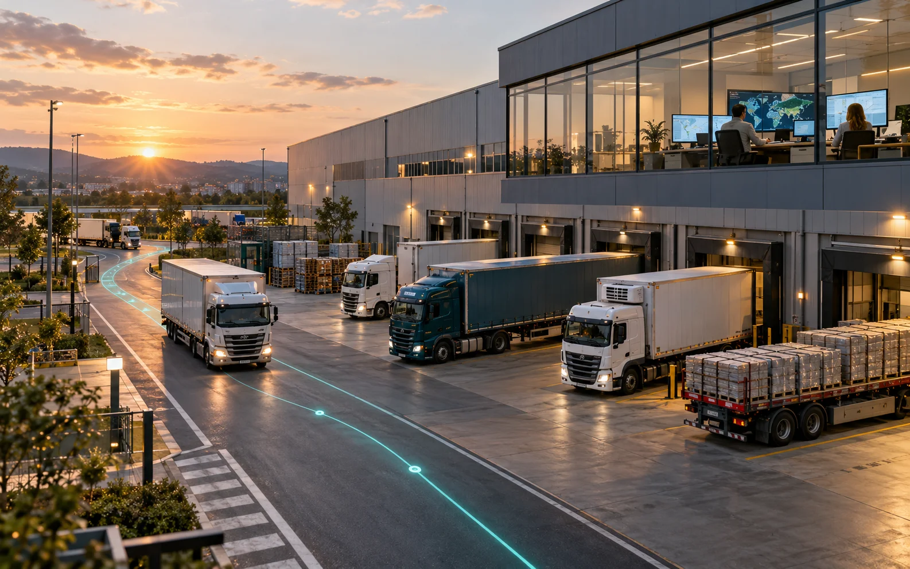

CargoMesh 2
Desarrollamos en equipo una plataforma para coordinar cargas, transportistas y operaciones, con asistencia conversacional, mapas y visualización 3D.

El proyecto
- Portales Cliente y Carrier para solicitudes, ofertas, reservas y vistas de seguimiento.
- Backend compartido, autenticación y acceso a datos por organización.
- Asistente Nova, mapas de carretera e integración MCP autenticada.
- 23 diseños visuales de camiones y 15 arquitecturas de sedes, con escenarios logísticos 3D.
Aprendizaje
- Construir un producto en equipo, integrando interfaz, servicios, datos e inteligencia artificial.
- Coordinar contratos, permisos y validaciones entre módulos y portales.
- Entregar incrementos mediante ramas, PR, pruebas y evidencia reproducible.
Desarrollo en equipo
- Evolución de CargoMesh desde su primera versión hacia una plataforma con múltiples transportistas.
- Desarrollo e integración de portales, servicios comerciales, persistencia, mapas y asistencia conversacional.
- Catálogos 3D compartidos, escenarios de cinco camiones y continuidad de estado entre vistas.
- Revisión de flujos, responsive, estados de recuperación y documentación de cada entrega.
Comprobación
Se comprobaron el repositorio público, las entregas #92, #128, #154 y #164 y los catálogos de 23 diseños de camiones y 15 sedes en la copia documentada. Los PR #154 y #164 están integrados en main; los otros corresponden a bases históricas. Las capturas son de escenarios de muestra. Los resultados de pruebas de los informes pertenecen a sus respectivas entregas; no se ejecutó una nueva batería de CargoMesh para esta ficha.
El problema que buscamos resolver
Organizar un transporte exige conectar información que suele estar dispersa: características de la carga, recogida y entrega, equipos, disponibilidad, propuestas y decisiones de contratación. Creamos CargoMesh en grupo para reunir ese proceso en una experiencia compartida entre clientes y empresas transportistas.
La plataforma busca que una solicitud sea comprensible, que las alternativas tengan condiciones explícitas y que cada organización conserve el control sobre sus datos y decisiones. El proyecto forma parte de Build, Ship, Shape: Amazon Developer Hackathon 2026.
De la solicitud a la operación
El espacio Cliente reúne la preparación de carga, solicitudes, ofertas, reservas, sedes e historial. El espacio Carrier incorpora oportunidades, propuestas, políticas de cotización, pedidos, flota, conductores y control operativo.
Nova acompaña la captura y revisión de información mediante conversación. Los contratos del producto separan la preparación de un borrador, la búsqueda de alternativas y la confirmación comercial: una sugerencia del asistente no sustituye la autorización de las personas. Estos contratos expresan el flujo del producto; no certifican que todas sus transiciones hayan sido aceptadas con datos reales en producción.
Una arquitectura que conecta las piezas
El proyecto combina TypeScript, Next.js y React en la aplicación web, con CSS Modules y Tailwind CSS para la presentación. Hono expone servicios REST y Zod define contratos compartidos. Supabase Auth, PostgreSQL y RLS aportan identidad, persistencia y separación de datos por organización.
Google Maps JavaScript presenta los mapas; Routes y Geocoding se consumen desde servidor. Three.js y React Three Fiber permiten explorar vehículos e instalaciones. El gateway de voz utiliza Python, WebSocket, Strands y Amazon Bedrock Nova. La integración MCP autenticada reutiliza los servicios de aplicación y sus controles de acceso.
Vercel aloja la aplicación web y la infraestructura de voz utiliza servicios de AWS. Estas son piezas del desarrollo conjunto: el repositorio reúne el trabajo del equipo y la documentación de cada módulo.
Logística que también se puede explorar
El catálogo reúne 23 diseños visuales de camiones y 15 arquitecturas de sedes. Un escenario de cinco camiones representa carga, espera, salida y mantenimiento. La selección, el reloj y la cámara se conservan al cambiar de vista, y la compatibilidad entre carrocería y modelo evita representaciones incoherentes.
Son recursos para explicar y explorar operaciones. Una animación no acredita tracking GPS, una arquitectura no crea una sede empresarial y un diseño de camión no registra un activo disponible.
Construir y aprender en grupo
Trabajamos con ramas, revisiones y PR para integrar incrementos de la plataforma. Los informes conservan código, capturas, pruebas y límites de cada entrega. El reto ha sido conectar módulos que evolucionan en paralelo sin perder coherencia entre interfaz, reglas, permisos y datos.
El aprendizaje abarca desarrollo web, integración de servicios, inteligencia artificial, bases de datos, visualización 3D y colaboración técnica. No se presentan métricas de negocio, premios, certificaciones ni una validación completa de producción que no estén acreditados.

Fuentes y entregas
- Arquitectura documentada del proyecto
- Estado y límites documentados
- Entrega #92: mapa ROAD y workspace React (base histórica)
- Entrega #128: escenario logístico y catálogo 3D (base histórica)
- Entrega #154: portal Cliente, integrada en main
- Entrega #164: nueva carga, integrada en main
- Video histórico del escenario de cinco camiones
Alcance de esta versión
Proyecto desarrollado en grupo. Esta presentación describe el producto completo y reconoce el trabajo compartido; no atribuye todos sus componentes a una sola persona. Los modelos y animaciones 3D son referencias visuales, no GPS ni flota real. Código integrado, demostración local y despliegue publicado se verifican por separado.
La ficha se preparó el 23 de octubre de 2026. El proyecto continúa evolucionando; las imágenes y fuentes indican la entrega a la que corresponden.